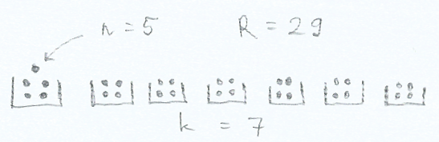
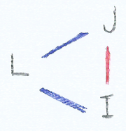
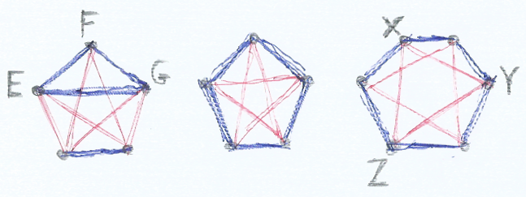

BOLG
„Bolgok, akik programoznak, mert teremtenek valamit,
ami egyszercsak életre kel és működik.”
Mt 5,1-10
← előző: in memoriam Vigassy Mihály atya |
következő: hierarchikus menü és ontológia →
Szemerédi prof és a Ramsey-tétel – 2021. június 18.
Olvasom a Szemerédi Endre matematikus professzorral készített interjút.
Az újságírónak végül egész jól sikerül belőle kihúzni
az eredményeinek a közember számára is érhető magyarázatát,
de elsőre a kutatásait megvilágítandó csak annyit mond:
„Ahhoz hasonlóan, ahogy mondjuk a Ramsey-tétel is kifejti.”
Kicsit úgy, mintha ez már elegendő is lenne,
úgyis mindenki alsóban tanulja a Ramsey-tételt. :)
Megnéztem, hogy mi rejlik egy ilyen tételben,
amire egy matematikus csak mellesleg, illusztrációként hivatkozik.
alap
[1] Ha 3 skatulya van és 4 golyót osztunk szét bennük,
akkor lesz olyan skatulya, amiben 2 golyó van.
Eddig oké. :)
1. csavar
Ugyanez másképp:
[2] 3 skatulya esetén van olyan szám – konkrétan a 4 –,
hogy ha annyi golyó van, akkor a szétosztás után
tutira lesz egy 2-golyós skatulya.
[3] k skatulya esetén van olyan R szám – konkrétan R = k+1 –,
hogy ha R db golyó van, akkor a szétosztás után
tutira lesz egy 2-golyós skatulya.
[4] k skatulya esetén van olyan R szám – konkrétan a R = k(n-1)+1 –,
hogy ha R db golyó van, akkor a szétosztás után
tutira lesz egy n golyót tartalmazó skatulya.

7 skatulya esetén valóban:
a 29. golyó kénytelen 5. lenni valamelyik skatulyában.
Ez a skatulya-elv.
2. csavar
Mostantól a k skatulyába rakás helyett
k-féle színnel színezzük a golyókat.
Vegyük észre, hogy ez ugyanaz.
Amit eddig az első skatulyába tettünk,
azt mostantól (mondjuk) kékre színezzük,
amit eddig a másodikba, azt mostantól pirosra stb.
Az [1] és [4] állítás így átfogalmazva:
[5] Ha 3 színnel színezünk 4 golyót,
akkor lesz 2 azonos színű golyó.
[6] k szín esetén van olyan R szám – konkrétan a R = k(n-1)+1 –,
hogy ha R db golyót színezünk ezekkel a színekkel,
akkor tutira lesz n db azonos színű golyó.
3. csavar
Ugyanez másképp:
[7] k szín esetén van olyan R szám – konkrétan a R = k(n-1)+1 –,
hogy ha R db golyót színezünk ezekkel a színekkel,
akkor tutira lesz a golyóknak egy n-elemű részhalmaza,
amin belül minden golyó azonos színű.
4. csavar
Golyókról térjünk át bármilyen entitásokra, pl. emberekre.
Most nem az entitásokat,
hanem az entitások közötti kapcsolatokat színezzük.
Klasszikus példa emberek esetén az ismeri-e kapcsolat.
Minden két ember között van egy effajta kapcsolat:
kékre színezzük a kapcsolatot, ha ismerik egymást,
és pirosra, ha nem ismerik egymást.
(Vegyük észre, hogy ez a két szín avagy k = 2 esete.)
Ha Laci ismeri Janit és Imit is, de Jani nem ismeri Imit,
akkor L-J kék, L-I kék, J-I piros.
Az ilyesmit gráfokkal ábrázolhatjuk,
mely csúcsokat (entitásokat)
és közöttük húzódó éleket (kapcsolatokat) tartalmaz.

Erre az esetre is igaz a fentiekkel analóg állítás, így hangzik:
[8] 2 szín esetén van olyan R szám – konkrétan...
hát azt nem tudjuk, mert képlet nincs rá! –,
hogy ha R db ember közötti összes kapcsolatot
színezzük ezekkel a színekkel,
akkor tutira lesz az embereknek egy n-elemű részhalmaza,
amin belül minden kapcsolat azonos színű.
Mi a helyzet n = 3 esetén?

Első ránézésre R = 5 ember elegendőnek tűnhet,
mert EFG egy olyan háromszög,
ahol minden kapcsolat kék.
A középső ábra viszont rácáfol erre:
itt nincs olyan háromszög, amely egyszínű lenne.
Ehhez 6 ember kell.
A jobboldali ábrán látjuk,
hogy hiába próbálkozunk azzal a módszerrel,
ami a középső ábrán bejött,
mindenképp lesz egyszínű háromszög, például XYZ.
n = 3 esetén tehát R = 6.
Ez a parti probléma. Hány ember kell ahhoz,
hogy mindenképp legyen köztük három,
akik kölcsönösen ismerik egymást vagy
három, akik közül egyik sem ismeri a másikat?
A válasz: 6.
Megjegyezzük, hogy kapcsolatok színezése esetén n > 4-re
az R értéke mai tudásunk szerint nem ismert.
5. csavar
Eleinte entitásokat színeztünk,
aztán átváltottunk entitások közötti kapcsolatok színezésére.
Ezt felfoghatjuk úgy is, hogy entitások párjait színeztük.
Így tekintve, egy további paramétert bevezetve,
újabb irányba általánosíthatjuk az eddigieket:
t = 1, ha entitásokat színezünk,
t = 2, ha entitások párjait színezzük.
Ezt továbbvíve entitások
hármasait (t = 3), négyeseit (t = 4),
stb. is színezhetjük.
Utóbbiakra már nehezebb szemléletes példát adni.
t = 3 esetben legyen az a kapcsolat három ember között,
hogy az össz testtömegük
kisebb-e 230 kg-nál (kék), vagy nem (piros).
A gráfos ábrázolás itt már nem működik,
táblázatban soroljuk fel a kapcsolatokat:
Aladár 86 kg, Béla 84 kg, Cecil 75 kg, Dénes 65 kg.
ABC 245 kg piros
ABD 235 kg piros
ACD 226 kg kék
BCD 224 kg kék
Az ABC háromelemű részhalmazban az összes (1 db)
hármas kapcsolat triviális módon egyszínű,
az ABCD négyelemű részhalmazban persze már nem egyszínű
az összes (fent felsorolt 4 db) kapcsolat.
A slusszpoén az, hogy tetszőleges t értékre
és bárhány színre igaz a fentiekkel analóg állítás:
[9] minden k-ra, n-re és t-re:
k szín esetén van olyan R szám,
hogy ha R db entitás közötti összes t-elemű kapcsolatot
színezzük ezekkel a színekkel,
akkor tutira lesz az entitásoknak egy n-elemű részhalmaza,
amin belül minden t-elemű kapcsolat azonos színű.
Ez a Ramsey-tétel.
Amit Szemerédi prof „csak úgy” említett. :)
A fent emlegetett R számok a Ramsey-számok.
Láttuk, hogy t = 2 esetén már nincs képlet a Ramsey-számokra.
Megjegyezzük, hogy t = 3 esetén
az egyetlen ismert Ramsey-szám
(a triviális n < 4 esetektől eltekintve)
a k = 2, t = 3, n = 4 eset, ekkor R = 13.
Vagyis: ahhoz, hogy hármas kapcsolatok esetén mindenképpen legyen
négyelemű egyszínű részhalmaz, 13 entitás szükséges.
Érdemes összevetni a végső [9] állítást a kiinduló [1] állítással. :)